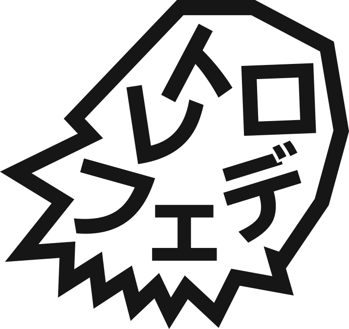

Personal collection / 01
Pick a little world.
Projects, experiments, and things I make.

Hover to select · Click to exploreTab + Enter work too
The Sun and 99 nearby stars. Explore our corner of the universe in 3D.

retrophede.Personal collection / 01
Projects, experiments, and things I make.
Hover to select · Click to exploreTab + Enter work too
The Sun and 99 nearby stars. Explore our corner of the universe in 3D.